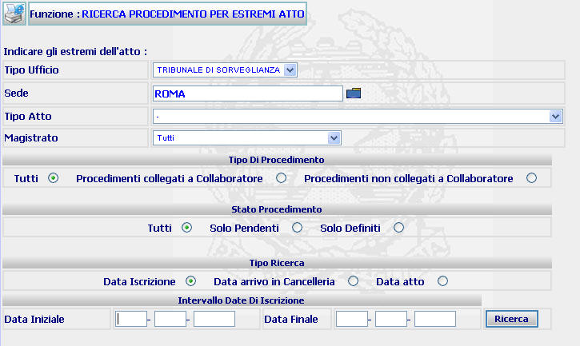
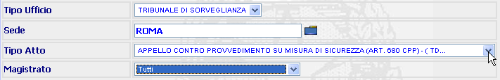
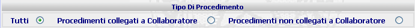
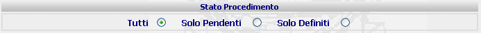
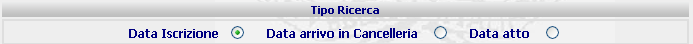
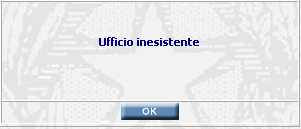

RICERCA PROCEDIMENTO PER ESTREMI ATTO: La funzione consente di operare ricerche di procedimenti SIUS presso il Tribunale di Sorveglianza e gli Uffici di Sorveglianza del Distretto di appartenenza attraverso alcuni canali di ricerca indicati nella relativa maschera
LE MASCHERE VIDEO
La funzione viene realizzata attraverso la maschera seguente in cui viene richiesto di compilare uno o più campi presenti nelle quattro sezioni di cui è composta la maschera stessa:
| Estremi dell'atto: da inserire nella parte superiore della maschera | |
| Tipo di Procedimento | |
| Stato Procedimento | |
| Tipo Ricerca | |
| Intervallo Date : questa sezione prenderà il nome relativo al tipo di ricerca che l'utente ha selezionato nella sezione precedente |

COME FARE PER ...
|
Per effettuare una ricerca relativa ai procedimenti aventi un determinato contenuto, ovvero assegnati ad un Magistrato ovvero ad una Cancelleria (ovviamente nel caso in cui si utilizzi la funzione di assegnazione dei procedimenti ad una cancelleria) occorre: |
selezionare attraverso le tendine relative ai campi “tipo atto”, “Magistrato” e “Cancelleria assegnataria” le voci con riferimento alle quali occorre effettuare la ricerca (nel caso in cui la ricerca debba essere estesa a tutte le voci di un determinato campo, è sufficiente non effettuare alcuna selezione)

confermare i dati inseriti nella maschera agendo sul bottone
. Se esiste uno o più procedimenti rispondenti agli estremi atto indicati, allora viene visualizzata la maschera di dettaglio procedimento sius (se viene individuato un solo procedimento) ovvero la maschera lista procedimento per estremi atto contenente la lista dei procedimenti trovati
|
per effettuare una ricerca relativa al tipo di procedimento occorre: |
selezionare nella sezione “tipo di procedimento” una delle voci indicate

confermare i dati inseriti nella maschera agendo sul bottone
|
per effettuare una ricerca relativa ai soli procedimenti pendenti, a quelli definiti o ad entrambi, occorre: |
selezionare nella sezione “stato procedimento” una delle voci indicate

confermare i dati inseriti nella maschera agendo sul bottone
|
Per limitare la ricerca ad un determinato lasso temporale con riferimento alla data di iscrizione, a quella di arrivo in cancelleria o a quella dell’atto occorre: |
selezionare nella sezione “Tipo ricerca” una delle voci indicate

allora viene visualizzata la maschera di dettaglio procedimento sius (se viene individuato un solo procedimento) ovvero la maschera lista procedimento per estremi atto contenente la lista dei procedimenti trovati
|
per indicare il lasso temporale al quale limitare la ricerca occorre: |
indicare la data di inizio e fine del periodo di riferimento
confermare i dati inseriti nella maschera agendo sul bottone
N.B. Il procedimento si intende definito solo dopo l'avvenuto deposito del relativo provvedimento (a prescindere dall'avvenuta validazione dello stesso) ovvero allorquando venga chiuso con una diversa modalità di definizione (es. definizione manuale, unificazione, ecc.)
CAMPI
I dati attraverso i quali è possibile effettuare la ricerca sono i seguenti:
| Tipo Ufficio | Campo nel quale va inserito il tipo di ufficio (Tribunale o Ufficio di Sorveglianza) nel quale la ricerca va effettuata |
| Sede |
Campo nel quale va inserita la sede dell'ufficio (digitandolo per intero
o selezionandolo attraverso l'apposito
Pulsante di
Ricerca da Lista Predefinita |
| Tipo atto | Campo nel quale va inserito il contenuto del procedimento attraverso l'apposita tendina. Se si vuole ottenere una ricerca relativa a tutti i contenuti, è necessario selezionare la voce "-" |
| Magistrato | Campo nel quale va inserito il Magistrato (da selezionare attraverso la relativa tendina) al quale si vuole limitare la ricerca. Se si vuole ottenere una ricerca relativa ai procedimenti di tutti i Magistrati, è necessario selezionare la voce "tutti" |
| Data iniziale - Data finale | Campo (di compilazione facoltativa) attraverso il quale si può inserire l'intervallo temporale al quale si vuole limitare la ricerca. |
N.B. Maggiore è la quantità dei dati inseriti dall'operatore che effettua la ricerca, maggiormente ristretta è la ricerca
PULSANTI
Oltre al pulsante
 di stampa del contesto (videata)
di stampa del contesto (videata)
|
PULSANTE |
DESCRIZIONE |
|
|
A fronte di tale comando, il sistema visualizza la lista predefinita. |
BOTTONI
Oltre ai comandi funzionali relativi al menù verticale sono presenti i seguenti comandi:
|
COMANDI |
DESCRIZIONE |
|
|
A fronte di tale comando, il sistema dopo aver verificato la validità dei dati specificati, presenta la maschera di dettaglio del singolo procedimento ovvero, nel caso in cui più procedimenti rispondano ai criteri di ricerca impostati, presenta la lista degli atti trovati |
CONTROLLI
A fronte della pressione
del bottone
 , il
sistema verifica che:
, il
sistema verifica che:
tutti i campi contenenti Pulsante di Ricerca da Lista Predefinita
e quelli selezionabili da una tendina siano stati compilati correttamente
Esista uno o più procedimenti rispondenti ai canali di ricerca selezionati.
|
Se il campo "sede" non è stato compilato correttamente verrà visualizzato il seguente messaggio |

|
Se il sistema non troverà alcun procedimento rispondente ai criteri di ricerca impostati verrà visualizzato il seguente messaggio |